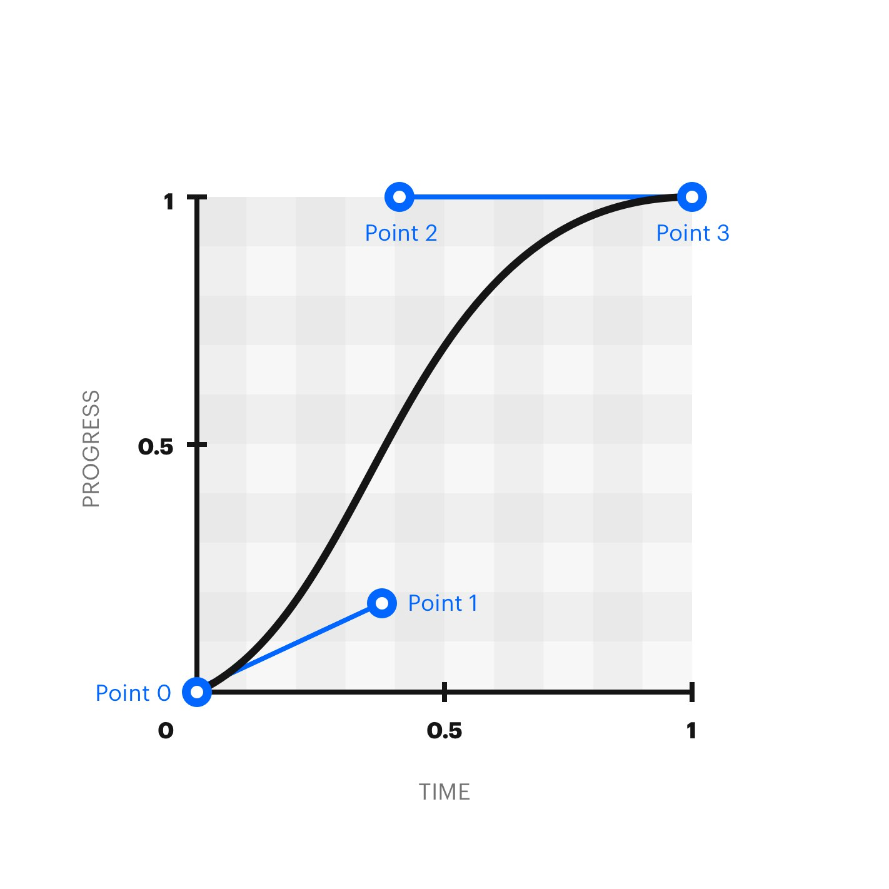

Что из себя представляет любая анимация? Это переход от одного состояния элемента к другому состоянию используя ключевые кадры.
Ключевой кадр это свойства элемента (прозрачность, цвет, положение и др.), которые должны применяться к элементу в заданный момент времени. Таким образом, анимация представляет собой плавный переход стилевых свойств от одного ключевого кадра к другому. Вычисление промежуточных значений между такими кадрами берёт на себя браузер.
Представим, что у нас есть два блока: круг и квадрат. Мы хотим написать анимацию так, чтобы круг превращался в квадрат, а квадрат превращался в круг.
Чтобы превратить розовый круг в квадрат, нам нужно будет поменять три свойства: width, height и border-radius.
Чтобы прописать ключевые кадры, используем директиву @keyframes:
@keyframes circle-to-square {
from {
width : 150px ;
height : 150px ;
border-radius : 100px ;
}
to {
width : 200px ;
height : 200px ;
border-radius : 10px ;
}
}
После ключевого слова @keyframes мы должны написать имя анимации. Оно понадобится нам, чтобы связать анимацию для конкретного элемента с ключевыми кадрами. Желательно, чтобы имя анимации было уникальным.
Ключевые кадры могут прописываться при помощи ключевых слов from (начальный кадр) и to (конечный кадр). Это удобно, если у вас всего два ключевых кадра. Если же кадров больше двух, то можно использовать проценты. Добавим нашей анимации промежуточный шаг, когда наш круг будет прямоугольной формой:
@keyframes circle-to-square {
from {
width : 150px ;
height : 150px ;
border-radius : 100px ;
}
50% {
width : 150px ;
height : 200px ;
border-radius : 10px ;
}
to {
width : 200px ;
height : 200px ;
border-radius : 10px ;
}
}
Браузер расшифровывает ключевое слово from как 0%, а ключевое слово to как 100%.
Мы прописали ключевые кадры анимации, но пока ничего не происходит
Чтобы анимация начала проигрываться, нам нужно присвоить её какому-то элементу, чтобы браузер понимал, какой элемент на странице анимировать.
Для присвоения анимации элементу нужно имя, которое мы задали.
.circle circle-to-square {
animation-name : circle-to-square ;
}
Теперь браузер знает, что ключевые кадры анимации с названием circle-to-square должны применяться к элементу с классом circle.
Кроме имени анимации можно указать none, значение по умолчанию. Означает отсутствие анимации. Удобно использовать для сброса анимации.
Например, можно указать это значение для элемента по наведению на него:
.element {
animation : name ;
}
.element:hover {
animation : none ;
}
Но анимация всё ещё не работает! Потому что браузер не знает, за какое время нужно изменять свойства элемента.
Задаёт время в секундах или миллисекундах, сколько должен длиться один цикл анимации. По умолчанию значение равно 0s, это означает, что никакой анимации нет.
Отрицательные значения и значения без указания единиц времени (s или ms) недопустимы и будут игнорироваться.
.circle {
animation-name : circle-to-square ;
animation-duration : 5s ;
}
Ура! Анимация проигрывается! Но только один раз... Есть вероятность, что пользователь просто не увидит анимации — она закончится раньше, чем он доскроллит до этого места страницы.
Перезагрузите страницу
При помощи свойства animation-iteration-count можно указать, сколько раз анимация будет проигрываться.
В качестве значения указывается число, означающее количество повторений, или ключевое слово infinite. Если указано infinite, то анимация будет повторяться бесконечно. Это значение встречается чаще всего!
.circle {
animation-name : circle-to-square ;
animation-duration : 5s ;
animation-iteration-count : infinite ;
}
Теперь анимация проигрывается постоянно, но вы наверняка видите, что после последнего кадра происходит резкий скачок к исходному состоянию.
Свойство animation-direction сообщает браузеру, должна ли анимация проигрываться в обратном порядке.
Доступные значения:
.circle {
animation-name : circle-to-square ;
animation-duration : 5s ;
animation-iteration-count : infinite ;
animation-direction : alternate ;
}
Теперь анимация красиво проигрывается. Круг плавно становится квадратом, а потом снова плавно превращается в круг.
Анимации пришли в веб в попытке стереть границу между реальным миром и компьютерным. В реальном мире вещи не меняют свои свойства мгновенно. Мячик перемещается из вашей руки на пол не моментально, а плавно меняя свою позицию в пространстве.
CSS-анимации по умолчанию проигрываются линейно, меняя свойства элемента на равные доли в равные промежутки времени. Такое поведение редко встречается в реальной жизни. Тот же мячик начинает своё движение медленно и со временем ускоряется.
При помощи свойства animation-timing-function можно задать, как будет развиваться анимация между ключевыми кадрами: равномерно, или сначала быстро, потом медленно, или по каким-то сложным внутренним законам.
Анимация проигрывается равномерно, без колебаний скорости.
Значение по умолчанию. Анимация начинается медленно, затем быстро разгоняется и снова замедляется к концу.
Анимация начинается медленно и плавно ускоряется к концу.
Анимация начинается быстро и плавно замедляется к концу.
Анимация начинается и заканчивается медленно, ускоряясь в середине.
Временная функция, описывающая тип ускорения в виде кривой Безье.
По оси x располагается временная шкала анимации, а по оси y — прогресс анимации. Это очень мощный инструмент для создания разнообразных анимаций со сложными внутренними законами.
Значения x1 и x2 должны находиться в диапазоне от 0 до 1 включительно. Задавая значения y1 и y2 меньше 0 или больше 1, можно добиться эффекта пружины.
Редко когда разработчики пишут эту функцию из головы. Чаще всего используется инструмент визуализации, позволяющий изменять значения и сразу видеть, как будет выглядеть анимация.
Один из самых популярных инструментов — cubic-bezier.com.
Задаёт пошаговую анимацию, разбивая её на отрезки, изменения происходят в начале каждого шага.
Пошаговая анимация, изменения происходят в конце каждого шага.
Функция, указывающая, что анимация должна воспроизводиться шагами, резко переходя от одного состояния к другому.
Первый параметр указывает, на сколько отрезков нужно разбить анимацию. Значением должно быть целое положительное число больше 0.
Второй параметр является необязательным и указывает позицию шага, момент, когда начинается анимация. Возможные значения:
Со значением start анимация начинается в начале каждого шага, со значением end — в конце каждого шага с задержкой. Задержка вычисляется как результат деления времени анимации на количество шагов. Если второй параметр не указан, используется значение по умолчанию end.
Очень сложно представить, как же будет выглядеть анимация при каждом из этих значений. Гораздо информативнее на машинках:
Вернёмся к нашему кругу и укажем, что он должен превращаться в квадрат нелинейно, медленно разгоняясь к концу анимации.
.circle {
animation-name : circle-to-square ;
animation-duration : 5s ;
animation-iteration-count : infinite ;
animation-direction : alternate ;
animation-timing-function : ease-in ;
}
Анимация стала более естественной, не такой компьютерной.
Пришло время заняться правой фигурой и превратить синий квадрат в розовый круг. Используем практически те же самые свойства, что и для круга, только зададим другое значение для свойства animation-direction, чтобы шаги анимации воспроизводились в обратном порядке:
.square {
animation-name : circle-to-square ;
animation-duration : 5s ;
animation-iteration-count : infinite ;
animation-direction : alternate-revers ;
animation-timing-function : ease-in ;
}
Сейчас обе фигуры меняются синхронно. Добавим правой фигуре небольшую задержку.
Свойство задаёт задержку воспроизведения анимации. Значением может быть любое число, как отрицательное, так и положительное.
Если значение положительное, то будет задержка перед началом анимации. Если значение отрицательное, то анимация начнётся как бы за кадром.
Пусть анимация правого элемента начнётся с задержкой -2.5 секунды. Так она будет начинаться с середины:
.square {
animation-name : circle-to-square ;
animation-duration : 5s ;
animation-iteration-count : infinite ;
animation-direction : alternate-revers ;
animation-timing-function : ease-in ;
animation-delay : -2.5s ;
}
Свойство, позволяющее ставить анимацию на паузу и запускать снова.
Доступные значения:
.circle : hover {
animation-play-state : paused ;
}
.square : hover {
animation-play-state : paused ;
}
animation — это мега-шорткат, в котором можно за раз указать значения для всех перечисленных выше свойств, начинающихся на animation-.
Значения указываются через пробел. Порядок указания значений не важен. Из-за того, что значения этих свойств очень разные, браузер сам догадывается, какое значение к какому свойству относится. Важно только помнить, что первое значение времени будет воспринято как значение animation-duration (длительность анимации), а второе — animation-delay (задержка воспроизведения).
Для работы анимации совсем не обязательно перечислять все значения. Достаточно указать имя анимации и её длительность. Для остальных свойств будут установлены значения по умолчанию.
.element {
animation : circle-to-square 2s infinite alternate-reverse ease-in 1s ;
}
Свойство perspective определяет расстояние от пользователя до задней стенки экрана по оси z. Таким образом можно придать глубину элементу, к которому применяется свойство transform. Эффект заметен только при 3D-трансформациях.
Свойство perspective влияет на вложенные элементы контейнера, для которого указано, а не на сам контейнер.
Значение по умолчанию — none. Оно отменяет перспективу.
Значением может быть положительное число в доступных единицах измерения.
С применением свойства perspective и свойства transform элемент может отображаться по-разному.
.perspective-50 {
perspective : 50px ;
}
.perspective-100 {
perspective : 100px ;
}
.transform-rotate-x {
background-color : orange ;
transform : rotateX(50deg) ;
}
.transform-rotate-y {
background-color : blue ;
transform : rotateY(20deg) ;
}
<div class="parent perspective-50">
<div class="transform-rotate-x">
Перспектива 50 градусов по x
</div>
</div>
<div class="parent perspective-100">
<div class="transform-rotate-y">
Перспектива 20 градусов по y
</div>
</div>
Свойство transform используем, когда нам нужно применить к элементу какие-либо трансформации: искажение, поворот, смещение, масштабирование.
Смещаем визуальное представление элемента на 120 пикселей вправо:
.selector {
transform : translateX(120px) ;
}
.selector {
transform : perspective(500px) translate(10px, 0, 20px) rotateY(3deg) ;
}
Часто бывает необходимо каким-то образом трансформировать визуальное представление элемента (масштабировать, повернуть, переместить) и при этом никак не затронуть соседние элементы в документе. Для подобных преобразований используется свойство transform. В качестве значения выступают различные функции трансформации: rotate, translate, scale, skew.
Подробно о функциях, которые можно указывать в качестве значения, написано в статье «Функции CSS-трансформации».
Стоит обратить особое внимание на тот факт, что трансформируемый элемент при трансформациях никак не взаимодействует с соседними элементами. Он как бы «приподнимается» над остальным содержимым. При этом он не уходит из потока документа, и остальные элементы располагаются так, как располагались до применения трансформаций.
Трансформировать можно только трансформируемые элементы. Звучит как «масло масляное», но на странице существуют определённые типы элементов, к которым не применима стандартная блочная модель. Нельзя трансформировать строчные и табличные элементы.
Если среди значений есть функция perspective(), то она должна быть первой среди всех значений:
Неправильно:
.selector {
transform : translate(10px, 0, 20px) rotateY(3deg) perspective(500px) ;
}
Правильно:
.selector {
transform :perspective(500px) translate(10px, 0, 20px) rotateY(3deg);
}
Можно применять трансформации сразу к нескольким осям, используя сокращённые функции:
.selector {
transform :translateX(10px) translateY(0) translateZ(20px);
}
Или можно использовать одну функцию translate, указав значение для всех трёх осей:
.selector {
transform :translateX(10px) translateY(0) translateZ(20px);
}
Свойство transition используется, когда нам нужно плавно изменить CSS-свойства между двумя состояниями элемента. Например, при наведении мышкой.
Свойство transition это шорткат. Как, например, margin или background. Оно включает в себя несколько подсвойств:
Применить к одному свойству:
.selector {
transition :transform 4s;
}
.selector {
transition :transform 4s 1s;
}
.selector {
transition :transform 4s ease-in-out 1s;
}
Применить к двум свойствам:
.selector {
transition :transform 4s, color 1s;
}
Применить ко всем свойствам, которые будут меняться:
.selector {
transition :all 0.5s ease-out;
}
Предположим, у нас есть кнопка, у которой мы хотим изменить фон при наведении мышкой.
<button class="button">Кнопка</button>
Тогда можно сказать, что у кнопки есть два состояния:
Стили для базового состояния:
.button {
background-color: blue;
}
Стили для ховер-состояния:
.button:hover {
background-color: white;
}
Чтобы при наведении фон кнопки изменялся не скачком, а плавно, мы используем свойство transition для плавного изменения цвета фона.
Стили для базового состояния:
.button {
background-color: blue;
transition: background-color 0.6s;
}
Стили для ховер-состояния:
.button:hover {
background-color: white;
}
Не забывай о том, что вместе с изменяемым свойством обязательно должна указываться длительность изменения .